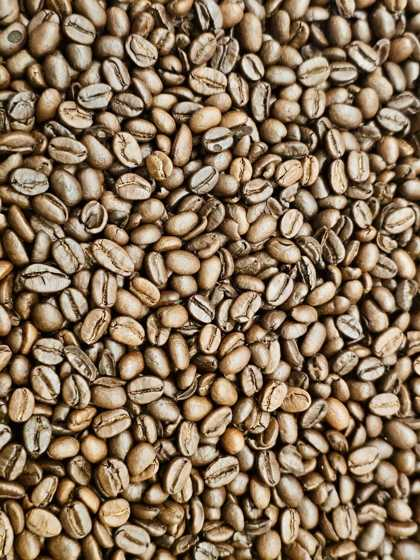
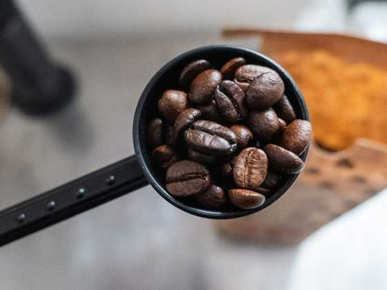
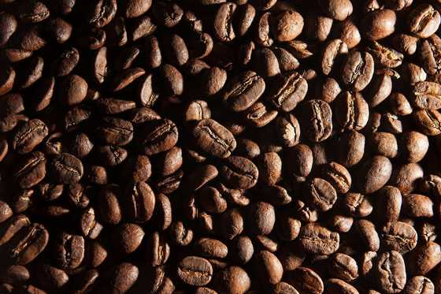
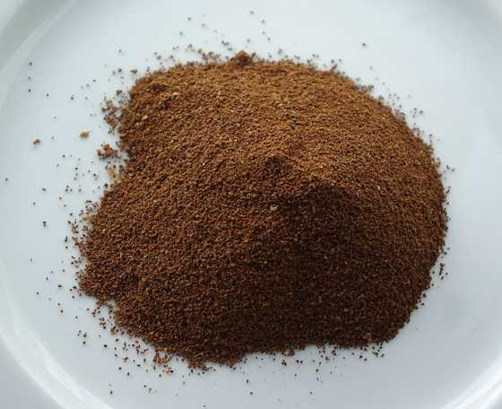
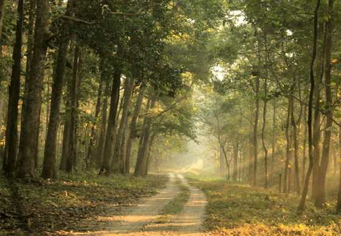
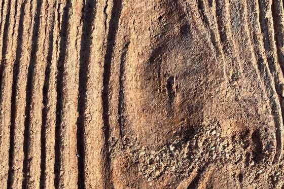

KUJI, IWATE
YAMANECO
COFFEE LAB
一人一人に、それぞれのコーヒーを。
単一農園の豆を、ブレンドせずに浅煎りで。豆ごとの個性を味わう、久慈のコーヒーショップです。
ABOUT
農園から一杯まで、たくさんの人の仕事。
YAMANECO COFFEE LABは、岩手県久慈市のコーヒーショップです。コンセプトは「一人一人にそれぞれのコーヒーを」。農園さんが大切に育てた豆をブレンドせず、シングルオリジン(単一農園)で数種類提供し、豆の個性が分かりやすいよう浅煎りに焼いているとされています。
オーナーの田端涼輔さんは、コーヒーを産地の農家、輸出入に携わる人、焙煎する人、淹れる人と、多くの人の仕事の結晶と語っています。三重県出身で、2018年に地域おこし協力隊として久慈へ。キッチンカーでのコーヒー販売から始まり、2022年8月には久慈市民文化会館(アンバーホール)2階にスタンドを開きました。
情報源: ふらっとてしごといち2024出展者紹介 / 同2025 / 月刊DANASS / Instagram。店名の意味は確認できていません。

左の淡い色が浅煎りのイメージ。色の帯は制作側の飾りです。



VOICE
口コミ
イメージ例
豆の説明を聞いてから選ぶのが楽しい一杯でした。酸味がやさしくて、飲みやすかったです。
イメージ例
コーヒーに合うスイーツと一緒に、ゆっくりできました。また別の豆を試したいです。
イメージ例
コーヒーが苦手でも飲める浅煎りを教えてもらえて、うれしかったです。
上記は制作側が作成したイメージ例で、実際のお客様の声ではありません。



ACCESS
アクセス
| 所在地 | 岩手県久慈市川崎町17-1 |
|---|---|
| 電話 | 準備中 |
| 営業時間 | 準備中 |
| 定休日 | 準備中 |
| @yamaneco_coffee_lab |
以前の記事には営業時間の記載がありましたが、現在は営業日が限られる場合もあるため掲載していません。
Instagramで最新情報を見る